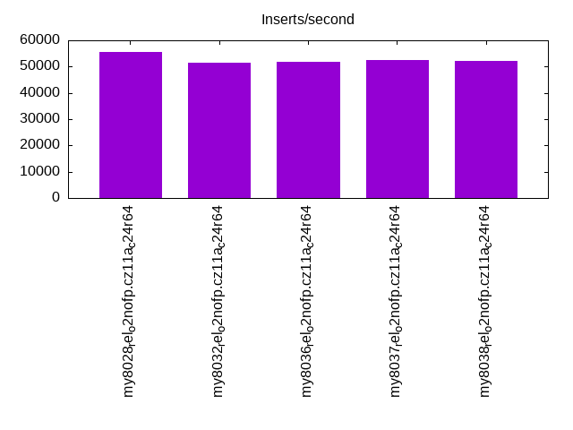

This is a report for the insert benchmark with 80M docs and 8 client(s). It is generated by scripts (bash, awk, sed) and Tufte might not be impressed. An overview of the insert benchmark is here and a short update is here. Below, by DBMS, I mean DBMS+version.config. An example is my8020.c10b40 where my means MySQL, 8020 is version 8.0.20 and c10b40 is the name for the configuration file.
The test server has is a c2d-standard-30 with HT off, 16 cores, 64G RAM, Ubuntu 22.04 and ext4 using SW RAID 0 and 2 NVMe devices. The benchmark was run with 8 clients and there were 1 or 3 connections per client (1 for queries or inserts without rate limits, 1+1 for rate limited inserts+deletes). It uses 8 table with a table per client. It loads 10M rows per table without secondary indexes, creates 3 secondary indexes per table, then inserts 40m+10m rows per table with a delete per insert to avoid growing the table. It then does 6 read+write tests for 1800s each that do queries as fast as possible with 100,100,500,500,1000,1000 inserts/s and the same for deletes/s per client concurrent with the queries. The database is cached by InnoDB. Clients and the DBMS share one server. The per-database configs are in the per-database subdirectories here.
The tested DBMS are:
The numbers are inserts/s for l.i0, l.i1 and l.i2, indexed docs (or rows) /s for l.x and queries/s for qr100, qp100 thru qr1000, qp1000" The values are the average rate over the entire test for inserts (IPS) and queries (QPS). The range of values for IPS and QPS is split into 3 parts: bottom 25%, middle 50%, top 25%. Values in the bottom 25% have a red background, values in the top 25% have a green background and values in the middle have no color. A gray background is used for values that can be ignored because the DBMS did not sustain the target insert rate. Red backgrounds are not used when the minimum value is within 80% of the max value.
| dbms | l.i0 | l.x | l.i1 | l.i2 | qr100 | qp100 | qr500 | qp500 | qr1000 | qp1000 |
|---|---|---|---|---|---|---|---|---|---|---|
| my8028_rel_o2nofp.cz11a_c24r64 | 666667 | 601504 | 124079 | 55710 | 56489 | 45213 | 55878 | 44538 | 54880 | 43616 |
| my8032_rel_o2nofp.cz11a_c24r64 | 640000 | 588236 | 110803 | 51414 | 52500 | 41993 | 51768 | 41391 | 50719 | 41380 |
| my8036_rel_o2nofp.cz11a_c24r64 | 640000 | 606061 | 114326 | 51914 | 59042 | 42270 | 58495 | 41690 | 57383 | 41724 |
| my8037_rel_o2nofp.cz11a_c24r64 | 640000 | 597016 | 114942 | 52459 | 59115 | 42416 | 58621 | 41753 | 57568 | 41877 |
| my8038_rel_o2nofp.cz11a_c24r64 | 640000 | 592593 | 113879 | 52151 | 58813 | 42356 | 58290 | 42449 | 57338 | 41754 |
This table has relative throughput, throughput for the DBMS relative to the DBMS in the first line, using the absolute throughput from the previous table. Values less than 0.95 have a yellow background. Values greater than 1.05 have a blue background.
| dbms | l.i0 | l.x | l.i1 | l.i2 | qr100 | qp100 | qr500 | qp500 | qr1000 | qp1000 |
|---|---|---|---|---|---|---|---|---|---|---|
| my8028_rel_o2nofp.cz11a_c24r64 | 1.00 | 1.00 | 1.00 | 1.00 | 1.00 | 1.00 | 1.00 | 1.00 | 1.00 | 1.00 |
| my8032_rel_o2nofp.cz11a_c24r64 | 0.96 | 0.98 | 0.89 | 0.92 | 0.93 | 0.93 | 0.93 | 0.93 | 0.92 | 0.95 |
| my8036_rel_o2nofp.cz11a_c24r64 | 0.96 | 1.01 | 0.92 | 0.93 | 1.05 | 0.93 | 1.05 | 0.94 | 1.05 | 0.96 |
| my8037_rel_o2nofp.cz11a_c24r64 | 0.96 | 0.99 | 0.93 | 0.94 | 1.05 | 0.94 | 1.05 | 0.94 | 1.05 | 0.96 |
| my8038_rel_o2nofp.cz11a_c24r64 | 0.96 | 0.99 | 0.92 | 0.94 | 1.04 | 0.94 | 1.04 | 0.95 | 1.04 | 0.96 |
This lists the average rate of inserts/s for the tests that do inserts concurrent with queries. For such tests the query rate is listed in the table above. The read+write tests are setup so that the insert rate should match the target rate every second. Cells that are not at least 95% of the target have a red background to indicate a failure to satisfy the target.
| dbms | qr100.L1 | qp100.L2 | qr500.L3 | qp500.L4 | qr1000.L5 | qp1000.L6 |
|---|---|---|---|---|---|---|
| my8028_rel_o2nofp.cz11a_c24r64 | 796 | 796 | 3982 | 3982 | 7965 | 7960 |
| my8032_rel_o2nofp.cz11a_c24r64 | 796 | 796 | 3980 | 3980 | 7960 | 7960 |
| my8036_rel_o2nofp.cz11a_c24r64 | 796 | 796 | 3980 | 3980 | 7965 | 7960 |
| my8037_rel_o2nofp.cz11a_c24r64 | 796 | 796 | 3980 | 3980 | 7960 | 7960 |
| my8038_rel_o2nofp.cz11a_c24r64 | 796 | 796 | 3978 | 3980 | 7960 | 7960 |
| target | 800 | 800 | 4000 | 4000 | 8000 | 8000 |
l.i0: load without secondary indexes. Graphs for performance per 1-second interval are here.
Average throughput:
Insert response time histogram: each cell has the percentage of responses that take <= the time in the header and max is the max response time in seconds. For the max column values in the top 25% of the range have a red background and in the bottom 25% of the range have a green background. The red background is not used when the min value is within 80% of the max value.
| dbms | 256us | 1ms | 4ms | 16ms | 64ms | 256ms | 1s | 4s | 16s | gt | max |
|---|---|---|---|---|---|---|---|---|---|---|---|
| my8028_rel_o2nofp.cz11a_c24r64 | 92.130 | 7.763 | 0.061 | 0.027 | 0.005 | 0.014 | 0.480 | ||||
| my8032_rel_o2nofp.cz11a_c24r64 | 72.530 | 27.327 | 0.085 | 0.037 | 0.007 | 0.014 | 0.476 | ||||
| my8036_rel_o2nofp.cz11a_c24r64 | 72.662 | 27.205 | 0.077 | 0.035 | 0.007 | 0.014 | 0.497 | ||||
| my8037_rel_o2nofp.cz11a_c24r64 | 78.948 | 20.921 | 0.067 | 0.042 | 0.009 | 0.014 | 0.488 | ||||
| my8038_rel_o2nofp.cz11a_c24r64 | 77.627 | 22.236 | 0.080 | 0.037 | 0.007 | 0.014 | 0.496 |
Performance metrics for the DBMS listed above. Some are normalized by throughput, others are not. Legend for results is here.
ips qps rps rmbps wps wmbps rpq rkbpq wpi wkbpi csps cpups cspq cpupq dbgb1 dbgb2 rss maxop p50 p99 tag 666667 0 0 0.0 1521.9 188.7 0.000 0.000 0.002 0.290 146990 62.5 0.220 15 5.3 55.9 9.2 0.480 103390 54941 my8028_rel_o2nofp.cz11a_c24r64 640000 0 0 0.0 1376.2 175.7 0.000 0.000 0.002 0.281 114429 62.0 0.179 16 5.3 55.9 8.9 0.476 95198 53842 my8032_rel_o2nofp.cz11a_c24r64 640000 0 0 0.0 1579.7 181.4 0.000 0.000 0.002 0.290 123770 62.0 0.193 16 5.3 55.9 8.9 0.497 95798 54758 my8036_rel_o2nofp.cz11a_c24r64 640000 0 0 0.0 1589.2 181.8 0.000 0.000 0.002 0.291 120028 61.6 0.188 15 5.3 55.9 8.9 0.488 95327 54342 my8037_rel_o2nofp.cz11a_c24r64 640000 0 0 0.0 1588.5 181.7 0.000 0.000 0.002 0.291 111105 61.9 0.174 15 5.3 55.9 8.9 0.496 96197 61633 my8038_rel_o2nofp.cz11a_c24r64
l.x: create secondary indexes.
Average throughput:
Performance metrics for the DBMS listed above. Some are normalized by throughput, others are not. Legend for results is here.
ips qps rps rmbps wps wmbps rpq rkbpq wpi wkbpi csps cpups cspq cpupq dbgb1 dbgb2 rss maxop p50 p99 tag 601504 0 3487 210.9 13418.9 641.6 0.006 0.359 0.022 1.092 41678 40.1 0.069 11 12.1 62.7 14.5 0.001 NA NA my8028_rel_o2nofp.cz11a_c24r64 588236 0 3367 203.2 13532.4 627.7 0.006 0.354 0.023 1.093 41016 48.4 0.070 13 12.1 62.7 13.9 0.002 NA NA my8032_rel_o2nofp.cz11a_c24r64 606061 0 3488 210.9 13509.1 641.5 0.006 0.356 0.022 1.084 39920 48.7 0.066 13 12.1 62.7 14.1 0.002 NA NA my8036_rel_o2nofp.cz11a_c24r64 597016 0 3488 210.8 13286.7 640.5 0.006 0.362 0.022 1.099 40304 47.8 0.068 13 12.1 62.7 14.2 0.002 NA NA my8037_rel_o2nofp.cz11a_c24r64 592593 0 3367 203.2 13482.3 626.1 0.006 0.351 0.023 1.082 40364 48.1 0.068 13 12.1 62.7 14.2 0.002 NA NA my8038_rel_o2nofp.cz11a_c24r64
l.i1: continue load after secondary indexes created with 50 inserts per transaction. Graphs for performance per 1-second interval are here.
Average throughput:
Insert response time histogram: each cell has the percentage of responses that take <= the time in the header and max is the max response time in seconds. For the max column values in the top 25% of the range have a red background and in the bottom 25% of the range have a green background. The red background is not used when the min value is within 80% of the max value.
| dbms | 256us | 1ms | 4ms | 16ms | 64ms | 256ms | 1s | 4s | 16s | gt | max |
|---|---|---|---|---|---|---|---|---|---|---|---|
| my8028_rel_o2nofp.cz11a_c24r64 | 0.001 | 84.976 | 14.748 | 0.231 | 0.027 | 0.016 | 0.739 | ||||
| my8032_rel_o2nofp.cz11a_c24r64 | 76.788 | 22.838 | 0.322 | 0.035 | 0.018 | 0.925 | |||||
| my8036_rel_o2nofp.cz11a_c24r64 | nonzero | 79.750 | 19.876 | 0.321 | 0.034 | 0.019 | 0.792 | ||||
| my8037_rel_o2nofp.cz11a_c24r64 | 80.216 | 19.407 | 0.320 | 0.038 | 0.018 | nonzero | 1.242 | ||||
| my8038_rel_o2nofp.cz11a_c24r64 | 79.378 | 20.255 | 0.315 | 0.034 | 0.018 | 0.833 |
Delete response time histogram: each cell has the percentage of responses that take <= the time in the header and max is the max response time in seconds. For the max column values in the top 25% of the range have a red background and in the bottom 25% of the range have a green background. The red background is not used when the min value is within 80% of the max value.
| dbms | 256us | 1ms | 4ms | 16ms | 64ms | 256ms | 1s | 4s | 16s | gt | max |
|---|---|---|---|---|---|---|---|---|---|---|---|
| my8028_rel_o2nofp.cz11a_c24r64 | 0.390 | 89.249 | 10.148 | 0.178 | 0.020 | 0.014 | 0.738 | ||||
| my8032_rel_o2nofp.cz11a_c24r64 | 0.019 | 82.968 | 16.724 | 0.248 | 0.026 | 0.016 | 0.784 | ||||
| my8036_rel_o2nofp.cz11a_c24r64 | 0.043 | 85.124 | 14.540 | 0.250 | 0.026 | 0.016 | 0.788 | ||||
| my8037_rel_o2nofp.cz11a_c24r64 | 0.070 | 85.464 | 14.175 | 0.245 | 0.030 | 0.016 | 0.699 | ||||
| my8038_rel_o2nofp.cz11a_c24r64 | 0.056 | 84.774 | 14.886 | 0.243 | 0.026 | 0.015 | 0.828 |
Performance metrics for the DBMS listed above. Some are normalized by throughput, others are not. Legend for results is here.
ips qps rps rmbps wps wmbps rpq rkbpq wpi wkbpi csps cpups cspq cpupq dbgb1 dbgb2 rss maxop p50 p99 tag 124079 0 150 2.3 7001.0 327.8 0.001 0.019 0.056 2.705 183903 78.2 1.482 101 17.7 68.5 21.8 0.739 16037 7991 my8028_rel_o2nofp.cz11a_c24r64 110803 0 134 2.1 7878.6 375.0 0.001 0.019 0.071 3.466 181093 78.6 1.634 113 17.5 68.2 21.5 0.925 14435 5744 my8032_rel_o2nofp.cz11a_c24r64 114326 0 138 2.2 8076.7 384.9 0.001 0.019 0.071 3.447 180392 77.8 1.578 109 17.6 68.3 21.6 0.792 14934 5944 my8036_rel_o2nofp.cz11a_c24r64 114942 0 139 2.2 8087.0 386.5 0.001 0.019 0.070 3.443 180773 77.6 1.573 108 17.3 68.1 21.4 1.242 15038 6293 my8037_rel_o2nofp.cz11a_c24r64 113879 0 137 2.1 8052.7 383.5 0.001 0.019 0.071 3.448 178950 77.8 1.571 109 17.5 68.3 21.5 0.833 14937 6045 my8038_rel_o2nofp.cz11a_c24r64
l.i2: continue load after secondary indexes created with 5 inserts per transaction. Graphs for performance per 1-second interval are here.
Average throughput:
Insert response time histogram: each cell has the percentage of responses that take <= the time in the header and max is the max response time in seconds. For the max column values in the top 25% of the range have a red background and in the bottom 25% of the range have a green background. The red background is not used when the min value is within 80% of the max value.
| dbms | 256us | 1ms | 4ms | 16ms | 64ms | 256ms | 1s | 4s | 16s | gt | max |
|---|---|---|---|---|---|---|---|---|---|---|---|
| my8028_rel_o2nofp.cz11a_c24r64 | 1.512 | 87.327 | 11.073 | 0.061 | 0.022 | 0.001 | 0.003 | 0.569 | |||
| my8032_rel_o2nofp.cz11a_c24r64 | 0.088 | 84.350 | 15.441 | 0.085 | 0.031 | 0.001 | 0.003 | 0.550 | |||
| my8036_rel_o2nofp.cz11a_c24r64 | 0.186 | 85.269 | 14.431 | 0.079 | 0.031 | 0.002 | 0.003 | 0.544 | |||
| my8037_rel_o2nofp.cz11a_c24r64 | 0.237 | 85.768 | 13.879 | 0.083 | 0.029 | 0.002 | 0.003 | 0.571 | |||
| my8038_rel_o2nofp.cz11a_c24r64 | 0.197 | 85.533 | 14.150 | 0.085 | 0.031 | 0.001 | 0.003 | 0.557 |
Delete response time histogram: each cell has the percentage of responses that take <= the time in the header and max is the max response time in seconds. For the max column values in the top 25% of the range have a red background and in the bottom 25% of the range have a green background. The red background is not used when the min value is within 80% of the max value.
| dbms | 256us | 1ms | 4ms | 16ms | 64ms | 256ms | 1s | 4s | 16s | gt | max |
|---|---|---|---|---|---|---|---|---|---|---|---|
| my8028_rel_o2nofp.cz11a_c24r64 | 1.740 | 87.546 | 10.630 | 0.060 | 0.022 | nonzero | 0.003 | 0.568 | |||
| my8032_rel_o2nofp.cz11a_c24r64 | 0.069 | 84.866 | 14.946 | 0.084 | 0.031 | 0.001 | 0.003 | 0.548 | |||
| my8036_rel_o2nofp.cz11a_c24r64 | 0.231 | 85.903 | 13.754 | 0.077 | 0.030 | 0.002 | 0.003 | 0.544 | |||
| my8037_rel_o2nofp.cz11a_c24r64 | 0.318 | 86.344 | 13.222 | 0.082 | 0.029 | 0.002 | 0.003 | 0.569 | |||
| my8038_rel_o2nofp.cz11a_c24r64 | 0.229 | 86.131 | 13.522 | 0.084 | 0.030 | 0.001 | 0.003 | 0.555 |
Performance metrics for the DBMS listed above. Some are normalized by throughput, others are not. Legend for results is here.
ips qps rps rmbps wps wmbps rpq rkbpq wpi wkbpi csps cpups cspq cpupq dbgb1 dbgb2 rss maxop p50 p99 tag 55710 0 0 0.0 3963.9 172.2 0.000 0.000 0.071 3.165 274061 71.5 4.919 205 17.7 68.5 21.8 0.569 7103 4167 my8028_rel_o2nofp.cz11a_c24r64 51414 0 0 0.0 4514.0 196.2 0.000 0.000 0.088 3.907 260901 72.1 5.075 224 17.5 68.2 21.5 0.550 6533 3996 my8032_rel_o2nofp.cz11a_c24r64 51914 0 0 0.0 4551.9 197.6 0.000 0.000 0.088 3.897 261852 71.4 5.044 220 17.6 68.3 21.6 0.544 6618 3782 my8036_rel_o2nofp.cz11a_c24r64 52459 0 0 0.0 4580.7 199.2 0.000 0.000 0.087 3.889 263807 71.5 5.029 218 17.3 68.1 21.4 0.571 6694 3501 my8037_rel_o2nofp.cz11a_c24r64 52151 0 0 0.0 4549.2 197.7 0.000 0.000 0.087 3.882 265104 71.3 5.083 219 17.5 68.3 21.5 0.557 6638 3706 my8038_rel_o2nofp.cz11a_c24r64
qr100.L1: range queries with 100 insert/s per client. Graphs for performance per 1-second interval are here.
Average throughput:
Query response time histogram: each cell has the percentage of responses that take <= the time in the header and max is the max response time in seconds. For max values in the top 25% of the range have a red background and in the bottom 25% of the range have a green background. The red background is not used when the min value is within 80% of the max value.
| dbms | 256us | 1ms | 4ms | 16ms | 64ms | 256ms | 1s | 4s | 16s | gt | max |
|---|---|---|---|---|---|---|---|---|---|---|---|
| my8028_rel_o2nofp.cz11a_c24r64 | 99.954 | 0.045 | 0.001 | nonzero | 0.007 | ||||||
| my8032_rel_o2nofp.cz11a_c24r64 | 99.943 | 0.056 | 0.001 | nonzero | 0.007 | ||||||
| my8036_rel_o2nofp.cz11a_c24r64 | 99.966 | 0.033 | 0.001 | nonzero | 0.012 | ||||||
| my8037_rel_o2nofp.cz11a_c24r64 | 99.964 | 0.036 | 0.001 | nonzero | 0.013 | ||||||
| my8038_rel_o2nofp.cz11a_c24r64 | 99.965 | 0.034 | 0.001 | nonzero | 0.006 |
Insert response time histogram: each cell has the percentage of responses that take <= the time in the header and max is the max response time in seconds. For max values in the top 25% of the range have a red background and in the bottom 25% of the range have a green background. The red background is not used when the min value is within 80% of the max value.
| dbms | 256us | 1ms | 4ms | 16ms | 64ms | 256ms | 1s | 4s | 16s | gt | max |
|---|---|---|---|---|---|---|---|---|---|---|---|
| my8028_rel_o2nofp.cz11a_c24r64 | 98.528 | 1.472 | 0.010 | ||||||||
| my8032_rel_o2nofp.cz11a_c24r64 | 96.819 | 3.177 | 0.003 | 0.018 | |||||||
| my8036_rel_o2nofp.cz11a_c24r64 | 97.347 | 2.653 | 0.014 | ||||||||
| my8037_rel_o2nofp.cz11a_c24r64 | 98.330 | 1.670 | 0.009 | ||||||||
| my8038_rel_o2nofp.cz11a_c24r64 | 98.177 | 1.823 | 0.009 |
Delete response time histogram: each cell has the percentage of responses that take <= the time in the header and max is the max response time in seconds. For max values in the top 25% of the range have a red background and in the bottom 25% of the range have a green background. The red background is not used when the min value is within 80% of the max value.
| dbms | 256us | 1ms | 4ms | 16ms | 64ms | 256ms | 1s | 4s | 16s | gt | max |
|---|---|---|---|---|---|---|---|---|---|---|---|
| my8028_rel_o2nofp.cz11a_c24r64 | 1.878 | 97.441 | 0.681 | 0.011 | |||||||
| my8032_rel_o2nofp.cz11a_c24r64 | 0.010 | 97.969 | 2.021 | 0.012 | |||||||
| my8036_rel_o2nofp.cz11a_c24r64 | 0.507 | 97.938 | 1.556 | 0.013 | |||||||
| my8037_rel_o2nofp.cz11a_c24r64 | 0.597 | 98.455 | 0.948 | 0.010 | |||||||
| my8038_rel_o2nofp.cz11a_c24r64 | 0.441 | 98.604 | 0.955 | 0.009 |
Performance metrics for the DBMS listed above. Some are normalized by throughput, others are not. Legend for results is here.
ips qps rps rmbps wps wmbps rpq rkbpq wpi wkbpi csps cpups cspq cpupq dbgb1 dbgb2 rss maxop p50 p99 tag 796 56489 0 0.0 862.0 24.4 0.000 0.000 1.083 31.429 210804 50.3 3.732 142 17.7 68.5 21.8 0.007 7112 6841 my8028_rel_o2nofp.cz11a_c24r64 796 52500 0 0.0 827.9 23.6 0.000 0.000 1.040 30.375 195903 50.3 3.732 153 17.5 68.2 21.5 0.007 6601 6409 my8032_rel_o2nofp.cz11a_c24r64 796 59042 0 0.0 778.2 22.2 0.000 0.000 0.978 28.622 219902 50.2 3.725 136 17.6 68.3 21.6 0.012 7432 7198 my8036_rel_o2nofp.cz11a_c24r64 796 59115 0 0.0 1002.1 28.5 0.000 0.000 1.259 36.656 219994 50.3 3.721 136 17.3 68.1 21.4 0.013 7480 7224 my8037_rel_o2nofp.cz11a_c24r64 796 58813 0 0.0 953.3 27.1 0.000 0.000 1.198 34.910 218660 50.3 3.718 137 17.5 68.3 21.5 0.006 7416 7176 my8038_rel_o2nofp.cz11a_c24r64
qp100.L2: point queries with 100 insert/s per client. Graphs for performance per 1-second interval are here.
Average throughput:
Query response time histogram: each cell has the percentage of responses that take <= the time in the header and max is the max response time in seconds. For max values in the top 25% of the range have a red background and in the bottom 25% of the range have a green background. The red background is not used when the min value is within 80% of the max value.
| dbms | 256us | 1ms | 4ms | 16ms | 64ms | 256ms | 1s | 4s | 16s | gt | max |
|---|---|---|---|---|---|---|---|---|---|---|---|
| my8028_rel_o2nofp.cz11a_c24r64 | 99.095 | 0.895 | 0.010 | nonzero | 0.004 | ||||||
| my8032_rel_o2nofp.cz11a_c24r64 | 98.442 | 1.547 | 0.011 | nonzero | 0.004 | ||||||
| my8036_rel_o2nofp.cz11a_c24r64 | 98.502 | 1.488 | 0.010 | nonzero | 0.004 | ||||||
| my8037_rel_o2nofp.cz11a_c24r64 | 98.499 | 1.491 | 0.010 | 0.004 | |||||||
| my8038_rel_o2nofp.cz11a_c24r64 | 98.529 | 1.461 | 0.010 | nonzero | 0.004 |
Insert response time histogram: each cell has the percentage of responses that take <= the time in the header and max is the max response time in seconds. For max values in the top 25% of the range have a red background and in the bottom 25% of the range have a green background. The red background is not used when the min value is within 80% of the max value.
| dbms | 256us | 1ms | 4ms | 16ms | 64ms | 256ms | 1s | 4s | 16s | gt | max |
|---|---|---|---|---|---|---|---|---|---|---|---|
| my8028_rel_o2nofp.cz11a_c24r64 | 99.767 | 0.233 | 0.005 | ||||||||
| my8032_rel_o2nofp.cz11a_c24r64 | 99.278 | 0.722 | 0.007 | ||||||||
| my8036_rel_o2nofp.cz11a_c24r64 | 99.597 | 0.403 | 0.008 | ||||||||
| my8037_rel_o2nofp.cz11a_c24r64 | 99.677 | 0.323 | 0.006 | ||||||||
| my8038_rel_o2nofp.cz11a_c24r64 | 99.351 | 0.649 | 0.006 |
Delete response time histogram: each cell has the percentage of responses that take <= the time in the header and max is the max response time in seconds. For max values in the top 25% of the range have a red background and in the bottom 25% of the range have a green background. The red background is not used when the min value is within 80% of the max value.
| dbms | 256us | 1ms | 4ms | 16ms | 64ms | 256ms | 1s | 4s | 16s | gt | max |
|---|---|---|---|---|---|---|---|---|---|---|---|
| my8028_rel_o2nofp.cz11a_c24r64 | 0.660 | 99.274 | 0.066 | 0.005 | |||||||
| my8032_rel_o2nofp.cz11a_c24r64 | 99.764 | 0.236 | 0.006 | ||||||||
| my8036_rel_o2nofp.cz11a_c24r64 | 0.038 | 99.812 | 0.149 | 0.008 | |||||||
| my8037_rel_o2nofp.cz11a_c24r64 | 0.049 | 99.851 | 0.101 | 0.006 | |||||||
| my8038_rel_o2nofp.cz11a_c24r64 | 0.007 | 99.722 | 0.271 | 0.005 |
Performance metrics for the DBMS listed above. Some are normalized by throughput, others are not. Legend for results is here.
ips qps rps rmbps wps wmbps rpq rkbpq wpi wkbpi csps cpups cspq cpupq dbgb1 dbgb2 rss maxop p50 p99 tag 796 45213 0 0.0 93.0 3.1 0.000 0.000 0.117 3.961 176538 48.9 3.905 173 17.7 68.5 21.8 0.004 5705 5562 my8028_rel_o2nofp.cz11a_c24r64 796 41993 0 0.0 90.5 3.2 0.000 0.000 0.114 4.113 163104 48.8 3.884 186 17.5 68.2 21.5 0.004 5274 5161 my8032_rel_o2nofp.cz11a_c24r64 796 42270 0 0.0 96.8 3.4 0.000 0.000 0.122 4.369 164523 48.7 3.892 184 17.6 68.5 21.6 0.004 5307 5194 my8036_rel_o2nofp.cz11a_c24r64 796 42416 0 0.0 109.5 3.7 0.000 0.000 0.138 4.768 165233 48.7 3.896 184 17.3 68.2 21.4 0.004 5335 5210 my8037_rel_o2nofp.cz11a_c24r64 796 42356 0 0.0 93.7 3.3 0.000 0.000 0.118 4.186 165046 48.8 3.897 184 17.5 68.3 21.5 0.004 5323 5194 my8038_rel_o2nofp.cz11a_c24r64
qr500.L3: range queries with 500 insert/s per client. Graphs for performance per 1-second interval are here.
Average throughput:
Query response time histogram: each cell has the percentage of responses that take <= the time in the header and max is the max response time in seconds. For max values in the top 25% of the range have a red background and in the bottom 25% of the range have a green background. The red background is not used when the min value is within 80% of the max value.
| dbms | 256us | 1ms | 4ms | 16ms | 64ms | 256ms | 1s | 4s | 16s | gt | max |
|---|---|---|---|---|---|---|---|---|---|---|---|
| my8028_rel_o2nofp.cz11a_c24r64 | 99.901 | 0.080 | 0.018 | 0.001 | nonzero | 0.017 | |||||
| my8032_rel_o2nofp.cz11a_c24r64 | 99.862 | 0.118 | 0.019 | 0.001 | nonzero | 0.020 | |||||
| my8036_rel_o2nofp.cz11a_c24r64 | 99.921 | 0.063 | 0.016 | 0.001 | nonzero | 0.020 | |||||
| my8037_rel_o2nofp.cz11a_c24r64 | 99.920 | 0.063 | 0.015 | 0.001 | nonzero | 0.025 | |||||
| my8038_rel_o2nofp.cz11a_c24r64 | 99.919 | 0.065 | 0.015 | 0.001 | nonzero | 0.017 |
Insert response time histogram: each cell has the percentage of responses that take <= the time in the header and max is the max response time in seconds. For max values in the top 25% of the range have a red background and in the bottom 25% of the range have a green background. The red background is not used when the min value is within 80% of the max value.
| dbms | 256us | 1ms | 4ms | 16ms | 64ms | 256ms | 1s | 4s | 16s | gt | max |
|---|---|---|---|---|---|---|---|---|---|---|---|
| my8028_rel_o2nofp.cz11a_c24r64 | 85.612 | 14.305 | 0.083 | 0.030 | |||||||
| my8032_rel_o2nofp.cz11a_c24r64 | 83.928 | 15.905 | 0.167 | 0.033 | |||||||
| my8036_rel_o2nofp.cz11a_c24r64 | 82.874 | 17.000 | 0.126 | 0.028 | |||||||
| my8037_rel_o2nofp.cz11a_c24r64 | 84.204 | 15.693 | 0.103 | 0.026 | |||||||
| my8038_rel_o2nofp.cz11a_c24r64 | 85.999 | 13.926 | 0.075 | 0.028 |
Delete response time histogram: each cell has the percentage of responses that take <= the time in the header and max is the max response time in seconds. For max values in the top 25% of the range have a red background and in the bottom 25% of the range have a green background. The red background is not used when the min value is within 80% of the max value.
| dbms | 256us | 1ms | 4ms | 16ms | 64ms | 256ms | 1s | 4s | 16s | gt | max |
|---|---|---|---|---|---|---|---|---|---|---|---|
| my8028_rel_o2nofp.cz11a_c24r64 | 2.367 | 88.893 | 8.710 | 0.030 | 0.030 | ||||||
| my8032_rel_o2nofp.cz11a_c24r64 | 0.045 | 89.639 | 10.231 | 0.085 | 0.028 | ||||||
| my8036_rel_o2nofp.cz11a_c24r64 | 0.324 | 88.879 | 10.735 | 0.062 | 0.024 | ||||||
| my8037_rel_o2nofp.cz11a_c24r64 | 0.460 | 89.476 | 10.032 | 0.033 | 0.021 | ||||||
| my8038_rel_o2nofp.cz11a_c24r64 | 0.705 | 90.433 | 8.833 | 0.028 | 0.023 |
Performance metrics for the DBMS listed above. Some are normalized by throughput, others are not. Legend for results is here.
ips qps rps rmbps wps wmbps rpq rkbpq wpi wkbpi csps cpups cspq cpupq dbgb1 dbgb2 rss maxop p50 p99 tag 3982 55878 0 0.0 381.5 14.0 0.000 0.000 0.096 3.607 205372 51.6 3.675 148 17.7 68.5 21.8 0.017 7000 6755 my8028_rel_o2nofp.cz11a_c24r64 3980 51768 0 0.0 590.2 20.9 0.000 0.000 0.148 5.365 190246 51.9 3.675 160 17.5 68.2 21.5 0.020 6489 6219 my8032_rel_o2nofp.cz11a_c24r64 3980 58495 0 0.0 591.9 20.9 0.000 0.000 0.149 5.370 214464 51.8 3.666 142 17.6 68.5 21.6 0.020 7306 7053 my8036_rel_o2nofp.cz11a_c24r64 3980 58621 0 0.0 587.4 20.8 0.000 0.000 0.148 5.348 215022 51.8 3.668 141 17.3 68.2 21.4 0.025 7336 7081 my8037_rel_o2nofp.cz11a_c24r64 3978 58290 0 0.0 582.3 20.6 0.000 0.000 0.146 5.298 213267 51.8 3.659 142 17.5 68.3 21.5 0.017 7320 7037 my8038_rel_o2nofp.cz11a_c24r64
qp500.L4: point queries with 500 insert/s per client. Graphs for performance per 1-second interval are here.
Average throughput:
Query response time histogram: each cell has the percentage of responses that take <= the time in the header and max is the max response time in seconds. For max values in the top 25% of the range have a red background and in the bottom 25% of the range have a green background. The red background is not used when the min value is within 80% of the max value.
| dbms | 256us | 1ms | 4ms | 16ms | 64ms | 256ms | 1s | 4s | 16s | gt | max |
|---|---|---|---|---|---|---|---|---|---|---|---|
| my8028_rel_o2nofp.cz11a_c24r64 | 98.336 | 1.588 | 0.074 | 0.001 | 0.014 | ||||||
| my8032_rel_o2nofp.cz11a_c24r64 | 97.787 | 2.138 | 0.073 | 0.002 | nonzero | 0.016 | |||||
| my8036_rel_o2nofp.cz11a_c24r64 | 97.760 | 2.169 | 0.069 | 0.002 | 0.016 | ||||||
| my8037_rel_o2nofp.cz11a_c24r64 | 97.833 | 2.096 | 0.070 | 0.002 | nonzero | 0.017 | |||||
| my8038_rel_o2nofp.cz11a_c24r64 | 98.000 | 1.929 | 0.070 | 0.002 | 0.016 |
Insert response time histogram: each cell has the percentage of responses that take <= the time in the header and max is the max response time in seconds. For max values in the top 25% of the range have a red background and in the bottom 25% of the range have a green background. The red background is not used when the min value is within 80% of the max value.
| dbms | 256us | 1ms | 4ms | 16ms | 64ms | 256ms | 1s | 4s | 16s | gt | max |
|---|---|---|---|---|---|---|---|---|---|---|---|
| my8028_rel_o2nofp.cz11a_c24r64 | 91.302 | 8.693 | 0.005 | 0.020 | |||||||
| my8032_rel_o2nofp.cz11a_c24r64 | 83.596 | 16.376 | 0.028 | 0.022 | |||||||
| my8036_rel_o2nofp.cz11a_c24r64 | 87.186 | 12.797 | 0.017 | 0.022 | |||||||
| my8037_rel_o2nofp.cz11a_c24r64 | 87.244 | 12.734 | 0.022 | 0.020 | |||||||
| my8038_rel_o2nofp.cz11a_c24r64 | 88.552 | 11.429 | 0.019 | 0.022 |
Delete response time histogram: each cell has the percentage of responses that take <= the time in the header and max is the max response time in seconds. For max values in the top 25% of the range have a red background and in the bottom 25% of the range have a green background. The red background is not used when the min value is within 80% of the max value.
| dbms | 256us | 1ms | 4ms | 16ms | 64ms | 256ms | 1s | 4s | 16s | gt | max |
|---|---|---|---|---|---|---|---|---|---|---|---|
| my8028_rel_o2nofp.cz11a_c24r64 | 0.433 | 94.432 | 5.133 | 0.002 | 0.019 | ||||||
| my8032_rel_o2nofp.cz11a_c24r64 | 0.011 | 89.056 | 10.919 | 0.014 | 0.024 | ||||||
| my8036_rel_o2nofp.cz11a_c24r64 | 0.067 | 91.697 | 8.228 | 0.008 | 0.020 | ||||||
| my8037_rel_o2nofp.cz11a_c24r64 | 0.177 | 91.663 | 8.151 | 0.009 | 0.020 | ||||||
| my8038_rel_o2nofp.cz11a_c24r64 | 0.084 | 92.759 | 7.148 | 0.009 | 0.025 |
Performance metrics for the DBMS listed above. Some are normalized by throughput, others are not. Legend for results is here.
ips qps rps rmbps wps wmbps rpq rkbpq wpi wkbpi csps cpups cspq cpupq dbgb1 dbgb2 rss maxop p50 p99 tag 3982 44538 0 0.0 495.6 17.2 0.000 0.000 0.124 4.429 174628 50.2 3.921 180 17.7 68.5 21.8 0.014 5580 5423 my8028_rel_o2nofp.cz11a_c24r64 3980 41391 0 0.0 594.1 20.9 0.000 0.000 0.149 5.384 155599 50.5 3.759 195 17.5 68.2 21.5 0.016 5194 5004 my8032_rel_o2nofp.cz11a_c24r64 3980 41690 0 0.0 598.2 21.1 0.000 0.000 0.150 5.437 158359 50.4 3.799 193 17.6 68.6 21.6 0.016 5242 5067 my8036_rel_o2nofp.cz11a_c24r64 3980 41753 0 0.0 599.6 21.2 0.000 0.000 0.151 5.453 157945 50.4 3.783 193 17.3 68.4 21.4 0.017 5239 5068 my8037_rel_o2nofp.cz11a_c24r64 3980 42449 0 0.0 588.8 20.8 0.000 0.000 0.148 5.353 162639 50.5 3.831 190 17.5 68.3 21.5 0.016 5322 5097 my8038_rel_o2nofp.cz11a_c24r64
qr1000.L5: range queries with 1000 insert/s per client. Graphs for performance per 1-second interval are here.
Average throughput:
Query response time histogram: each cell has the percentage of responses that take <= the time in the header and max is the max response time in seconds. For max values in the top 25% of the range have a red background and in the bottom 25% of the range have a green background. The red background is not used when the min value is within 80% of the max value.
| dbms | 256us | 1ms | 4ms | 16ms | 64ms | 256ms | 1s | 4s | 16s | gt | max |
|---|---|---|---|---|---|---|---|---|---|---|---|
| my8028_rel_o2nofp.cz11a_c24r64 | 99.681 | 0.265 | 0.050 | 0.004 | nonzero | 0.026 | |||||
| my8032_rel_o2nofp.cz11a_c24r64 | 99.493 | 0.446 | 0.056 | 0.005 | nonzero | 0.034 | |||||
| my8036_rel_o2nofp.cz11a_c24r64 | 99.744 | 0.212 | 0.041 | 0.003 | nonzero | 0.027 | |||||
| my8037_rel_o2nofp.cz11a_c24r64 | 99.751 | 0.206 | 0.040 | 0.003 | nonzero | 0.032 | |||||
| my8038_rel_o2nofp.cz11a_c24r64 | 99.758 | 0.196 | 0.042 | 0.004 | nonzero | 0.027 |
Insert response time histogram: each cell has the percentage of responses that take <= the time in the header and max is the max response time in seconds. For max values in the top 25% of the range have a red background and in the bottom 25% of the range have a green background. The red background is not used when the min value is within 80% of the max value.
| dbms | 256us | 1ms | 4ms | 16ms | 64ms | 256ms | 1s | 4s | 16s | gt | max |
|---|---|---|---|---|---|---|---|---|---|---|---|
| my8028_rel_o2nofp.cz11a_c24r64 | nonzero | 78.156 | 21.245 | 0.599 | 0.034 | ||||||
| my8032_rel_o2nofp.cz11a_c24r64 | 78.611 | 20.958 | 0.431 | 0.035 | |||||||
| my8036_rel_o2nofp.cz11a_c24r64 | 79.068 | 20.505 | 0.427 | 0.039 | |||||||
| my8037_rel_o2nofp.cz11a_c24r64 | 80.162 | 19.413 | 0.425 | 0.034 | |||||||
| my8038_rel_o2nofp.cz11a_c24r64 | 75.745 | 23.540 | 0.715 | 0.039 |
Delete response time histogram: each cell has the percentage of responses that take <= the time in the header and max is the max response time in seconds. For max values in the top 25% of the range have a red background and in the bottom 25% of the range have a green background. The red background is not used when the min value is within 80% of the max value.
| dbms | 256us | 1ms | 4ms | 16ms | 64ms | 256ms | 1s | 4s | 16s | gt | max |
|---|---|---|---|---|---|---|---|---|---|---|---|
| my8028_rel_o2nofp.cz11a_c24r64 | 1.085 | 81.910 | 16.592 | 0.414 | 0.035 | ||||||
| my8032_rel_o2nofp.cz11a_c24r64 | 0.128 | 82.977 | 16.591 | 0.303 | 0.036 | ||||||
| my8036_rel_o2nofp.cz11a_c24r64 | 0.416 | 83.175 | 16.086 | 0.323 | 0.036 | ||||||
| my8037_rel_o2nofp.cz11a_c24r64 | 0.554 | 84.145 | 14.985 | 0.316 | 0.037 | ||||||
| my8038_rel_o2nofp.cz11a_c24r64 | 0.269 | 80.450 | 18.767 | 0.514 | 0.040 |
Performance metrics for the DBMS listed above. Some are normalized by throughput, others are not. Legend for results is here.
ips qps rps rmbps wps wmbps rpq rkbpq wpi wkbpi csps cpups cspq cpupq dbgb1 dbgb2 rss maxop p50 p99 tag 7965 54880 0 0.0 767.8 28.5 0.000 0.000 0.096 3.665 200089 53.3 3.646 155 17.7 68.5 21.8 0.026 6952 6409 my8028_rel_o2nofp.cz11a_c24r64 7960 50719 0 0.0 952.9 35.8 0.000 0.000 0.120 4.601 185040 53.9 3.648 170 17.5 68.2 21.5 0.034 6393 5914 my8032_rel_o2nofp.cz11a_c24r64 7965 57383 0 0.0 953.6 35.8 0.000 0.000 0.120 4.606 207441 53.8 3.615 150 17.6 68.6 21.6 0.027 7240 6665 my8036_rel_o2nofp.cz11a_c24r64 7960 57568 0 0.0 956.7 35.8 0.000 0.000 0.120 4.609 208733 53.9 3.626 150 17.3 68.4 21.4 0.032 7291 6729 my8037_rel_o2nofp.cz11a_c24r64 7960 57338 0 0.0 950.1 35.7 0.000 0.000 0.119 4.597 207485 53.9 3.619 150 17.5 68.3 21.5 0.027 7226 6665 my8038_rel_o2nofp.cz11a_c24r64
qp1000.L6: point queries with 1000 insert/s per client. Graphs for performance per 1-second interval are here.
Average throughput:
Query response time histogram: each cell has the percentage of responses that take <= the time in the header and max is the max response time in seconds. For max values in the top 25% of the range have a red background and in the bottom 25% of the range have a green background. The red background is not used when the min value is within 80% of the max value.
| dbms | 256us | 1ms | 4ms | 16ms | 64ms | 256ms | 1s | 4s | 16s | gt | max |
|---|---|---|---|---|---|---|---|---|---|---|---|
| my8028_rel_o2nofp.cz11a_c24r64 | 97.768 | 2.098 | 0.129 | 0.006 | nonzero | 0.024 | |||||
| my8032_rel_o2nofp.cz11a_c24r64 | 97.922 | 1.980 | 0.091 | 0.006 | nonzero | 0.025 | |||||
| my8036_rel_o2nofp.cz11a_c24r64 | 98.064 | 1.840 | 0.090 | 0.006 | nonzero | 0.024 | |||||
| my8037_rel_o2nofp.cz11a_c24r64 | 97.901 | 1.986 | 0.107 | 0.006 | nonzero | 0.027 | |||||
| my8038_rel_o2nofp.cz11a_c24r64 | 97.988 | 1.905 | 0.100 | 0.006 | nonzero | 0.036 |
Insert response time histogram: each cell has the percentage of responses that take <= the time in the header and max is the max response time in seconds. For max values in the top 25% of the range have a red background and in the bottom 25% of the range have a green background. The red background is not used when the min value is within 80% of the max value.
| dbms | 256us | 1ms | 4ms | 16ms | 64ms | 256ms | 1s | 4s | 16s | gt | max |
|---|---|---|---|---|---|---|---|---|---|---|---|
| my8028_rel_o2nofp.cz11a_c24r64 | 81.594 | 18.247 | 0.160 | 0.029 | |||||||
| my8032_rel_o2nofp.cz11a_c24r64 | 78.499 | 21.065 | 0.436 | 0.037 | |||||||
| my8036_rel_o2nofp.cz11a_c24r64 | 79.720 | 20.006 | 0.275 | 0.035 | |||||||
| my8037_rel_o2nofp.cz11a_c24r64 | 76.182 | 23.408 | 0.411 | 0.034 | |||||||
| my8038_rel_o2nofp.cz11a_c24r64 | 77.341 | 22.247 | 0.413 | 0.039 |
Delete response time histogram: each cell has the percentage of responses that take <= the time in the header and max is the max response time in seconds. For max values in the top 25% of the range have a red background and in the bottom 25% of the range have a green background. The red background is not used when the min value is within 80% of the max value.
| dbms | 256us | 1ms | 4ms | 16ms | 64ms | 256ms | 1s | 4s | 16s | gt | max |
|---|---|---|---|---|---|---|---|---|---|---|---|
| my8028_rel_o2nofp.cz11a_c24r64 | 0.411 | 85.671 | 13.807 | 0.110 | 0.027 | ||||||
| my8032_rel_o2nofp.cz11a_c24r64 | 0.024 | 83.197 | 16.497 | 0.283 | 0.035 | ||||||
| my8036_rel_o2nofp.cz11a_c24r64 | 0.157 | 84.195 | 15.464 | 0.183 | 0.032 | ||||||
| my8037_rel_o2nofp.cz11a_c24r64 | 0.041 | 81.041 | 18.623 | 0.294 | 0.030 | ||||||
| my8038_rel_o2nofp.cz11a_c24r64 | 0.071 | 82.298 | 17.332 | 0.299 | 0.035 |
Performance metrics for the DBMS listed above. Some are normalized by throughput, others are not. Legend for results is here.
ips qps rps rmbps wps wmbps rpq rkbpq wpi wkbpi csps cpups cspq cpupq dbgb1 dbgb2 rss maxop p50 p99 tag 7960 43616 0 0.0 785.4 29.0 0.000 0.000 0.099 3.725 166333 51.9 3.814 190 17.7 68.5 21.8 0.024 5452 5265 my8028_rel_o2nofp.cz11a_c24r64 7960 41380 0 0.0 978.6 36.5 0.000 0.000 0.123 4.695 148324 52.9 3.584 205 17.5 68.2 21.5 0.025 5195 4955 my8032_rel_o2nofp.cz11a_c24r64 7960 41724 0 0.0 979.3 36.6 0.000 0.000 0.123 4.705 149673 52.8 3.587 202 17.6 68.8 21.6 0.024 5259 5019 my8036_rel_o2nofp.cz11a_c24r64 7960 41877 0 0.0 985.6 36.7 0.000 0.000 0.124 4.715 152525 52.8 3.642 202 17.3 68.5 21.4 0.027 5242 4971 my8037_rel_o2nofp.cz11a_c24r64 7960 41754 0 0.0 978.3 36.4 0.000 0.000 0.123 4.684 151286 52.7 3.623 202 17.5 68.3 21.5 0.036 5258 5020 my8038_rel_o2nofp.cz11a_c24r64
l.i0: load without secondary indexes
Performance metrics for all DBMS, not just the ones listed above. Some are normalized by throughput, others are not. Legend for results is here.
ips qps rps rmbps wps wmbps rpq rkbpq wpi wkbpi csps cpups cspq cpupq dbgb1 dbgb2 rss maxop p50 p99 tag 666667 0 0 0.0 1521.9 188.7 0.000 0.000 0.002 0.290 146990 62.5 0.220 15 5.3 55.9 9.2 0.480 103390 54941 my8028_rel_o2nofp.cz11a_c24r64 640000 0 0 0.0 1376.2 175.7 0.000 0.000 0.002 0.281 114429 62.0 0.179 16 5.3 55.9 8.9 0.476 95198 53842 my8032_rel_o2nofp.cz11a_c24r64 640000 0 0 0.0 1579.7 181.4 0.000 0.000 0.002 0.290 123770 62.0 0.193 16 5.3 55.9 8.9 0.497 95798 54758 my8036_rel_o2nofp.cz11a_c24r64 640000 0 0 0.0 1589.2 181.8 0.000 0.000 0.002 0.291 120028 61.6 0.188 15 5.3 55.9 8.9 0.488 95327 54342 my8037_rel_o2nofp.cz11a_c24r64 640000 0 0 0.0 1588.5 181.7 0.000 0.000 0.002 0.291 111105 61.9 0.174 15 5.3 55.9 8.9 0.496 96197 61633 my8038_rel_o2nofp.cz11a_c24r64
l.x: create secondary indexes
Performance metrics for all DBMS, not just the ones listed above. Some are normalized by throughput, others are not. Legend for results is here.
ips qps rps rmbps wps wmbps rpq rkbpq wpi wkbpi csps cpups cspq cpupq dbgb1 dbgb2 rss maxop p50 p99 tag 601504 0 3487 210.9 13418.9 641.6 0.006 0.359 0.022 1.092 41678 40.1 0.069 11 12.1 62.7 14.5 0.001 NA NA my8028_rel_o2nofp.cz11a_c24r64 588236 0 3367 203.2 13532.4 627.7 0.006 0.354 0.023 1.093 41016 48.4 0.070 13 12.1 62.7 13.9 0.002 NA NA my8032_rel_o2nofp.cz11a_c24r64 606061 0 3488 210.9 13509.1 641.5 0.006 0.356 0.022 1.084 39920 48.7 0.066 13 12.1 62.7 14.1 0.002 NA NA my8036_rel_o2nofp.cz11a_c24r64 597016 0 3488 210.8 13286.7 640.5 0.006 0.362 0.022 1.099 40304 47.8 0.068 13 12.1 62.7 14.2 0.002 NA NA my8037_rel_o2nofp.cz11a_c24r64 592593 0 3367 203.2 13482.3 626.1 0.006 0.351 0.023 1.082 40364 48.1 0.068 13 12.1 62.7 14.2 0.002 NA NA my8038_rel_o2nofp.cz11a_c24r64
l.i1: continue load after secondary indexes created with 50 inserts per transaction
Performance metrics for all DBMS, not just the ones listed above. Some are normalized by throughput, others are not. Legend for results is here.
ips qps rps rmbps wps wmbps rpq rkbpq wpi wkbpi csps cpups cspq cpupq dbgb1 dbgb2 rss maxop p50 p99 tag 124079 0 150 2.3 7001.0 327.8 0.001 0.019 0.056 2.705 183903 78.2 1.482 101 17.7 68.5 21.8 0.739 16037 7991 my8028_rel_o2nofp.cz11a_c24r64 110803 0 134 2.1 7878.6 375.0 0.001 0.019 0.071 3.466 181093 78.6 1.634 113 17.5 68.2 21.5 0.925 14435 5744 my8032_rel_o2nofp.cz11a_c24r64 114326 0 138 2.2 8076.7 384.9 0.001 0.019 0.071 3.447 180392 77.8 1.578 109 17.6 68.3 21.6 0.792 14934 5944 my8036_rel_o2nofp.cz11a_c24r64 114942 0 139 2.2 8087.0 386.5 0.001 0.019 0.070 3.443 180773 77.6 1.573 108 17.3 68.1 21.4 1.242 15038 6293 my8037_rel_o2nofp.cz11a_c24r64 113879 0 137 2.1 8052.7 383.5 0.001 0.019 0.071 3.448 178950 77.8 1.571 109 17.5 68.3 21.5 0.833 14937 6045 my8038_rel_o2nofp.cz11a_c24r64
l.i2: continue load after secondary indexes created with 5 inserts per transaction
Performance metrics for all DBMS, not just the ones listed above. Some are normalized by throughput, others are not. Legend for results is here.
ips qps rps rmbps wps wmbps rpq rkbpq wpi wkbpi csps cpups cspq cpupq dbgb1 dbgb2 rss maxop p50 p99 tag 55710 0 0 0.0 3963.9 172.2 0.000 0.000 0.071 3.165 274061 71.5 4.919 205 17.7 68.5 21.8 0.569 7103 4167 my8028_rel_o2nofp.cz11a_c24r64 51414 0 0 0.0 4514.0 196.2 0.000 0.000 0.088 3.907 260901 72.1 5.075 224 17.5 68.2 21.5 0.550 6533 3996 my8032_rel_o2nofp.cz11a_c24r64 51914 0 0 0.0 4551.9 197.6 0.000 0.000 0.088 3.897 261852 71.4 5.044 220 17.6 68.3 21.6 0.544 6618 3782 my8036_rel_o2nofp.cz11a_c24r64 52459 0 0 0.0 4580.7 199.2 0.000 0.000 0.087 3.889 263807 71.5 5.029 218 17.3 68.1 21.4 0.571 6694 3501 my8037_rel_o2nofp.cz11a_c24r64 52151 0 0 0.0 4549.2 197.7 0.000 0.000 0.087 3.882 265104 71.3 5.083 219 17.5 68.3 21.5 0.557 6638 3706 my8038_rel_o2nofp.cz11a_c24r64
qr100.L1: range queries with 100 insert/s per client
Performance metrics for all DBMS, not just the ones listed above. Some are normalized by throughput, others are not. Legend for results is here.
ips qps rps rmbps wps wmbps rpq rkbpq wpi wkbpi csps cpups cspq cpupq dbgb1 dbgb2 rss maxop p50 p99 tag 796 56489 0 0.0 862.0 24.4 0.000 0.000 1.083 31.429 210804 50.3 3.732 142 17.7 68.5 21.8 0.007 7112 6841 my8028_rel_o2nofp.cz11a_c24r64 796 52500 0 0.0 827.9 23.6 0.000 0.000 1.040 30.375 195903 50.3 3.732 153 17.5 68.2 21.5 0.007 6601 6409 my8032_rel_o2nofp.cz11a_c24r64 796 59042 0 0.0 778.2 22.2 0.000 0.000 0.978 28.622 219902 50.2 3.725 136 17.6 68.3 21.6 0.012 7432 7198 my8036_rel_o2nofp.cz11a_c24r64 796 59115 0 0.0 1002.1 28.5 0.000 0.000 1.259 36.656 219994 50.3 3.721 136 17.3 68.1 21.4 0.013 7480 7224 my8037_rel_o2nofp.cz11a_c24r64 796 58813 0 0.0 953.3 27.1 0.000 0.000 1.198 34.910 218660 50.3 3.718 137 17.5 68.3 21.5 0.006 7416 7176 my8038_rel_o2nofp.cz11a_c24r64
qp100.L2: point queries with 100 insert/s per client
Performance metrics for all DBMS, not just the ones listed above. Some are normalized by throughput, others are not. Legend for results is here.
ips qps rps rmbps wps wmbps rpq rkbpq wpi wkbpi csps cpups cspq cpupq dbgb1 dbgb2 rss maxop p50 p99 tag 796 45213 0 0.0 93.0 3.1 0.000 0.000 0.117 3.961 176538 48.9 3.905 173 17.7 68.5 21.8 0.004 5705 5562 my8028_rel_o2nofp.cz11a_c24r64 796 41993 0 0.0 90.5 3.2 0.000 0.000 0.114 4.113 163104 48.8 3.884 186 17.5 68.2 21.5 0.004 5274 5161 my8032_rel_o2nofp.cz11a_c24r64 796 42270 0 0.0 96.8 3.4 0.000 0.000 0.122 4.369 164523 48.7 3.892 184 17.6 68.5 21.6 0.004 5307 5194 my8036_rel_o2nofp.cz11a_c24r64 796 42416 0 0.0 109.5 3.7 0.000 0.000 0.138 4.768 165233 48.7 3.896 184 17.3 68.2 21.4 0.004 5335 5210 my8037_rel_o2nofp.cz11a_c24r64 796 42356 0 0.0 93.7 3.3 0.000 0.000 0.118 4.186 165046 48.8 3.897 184 17.5 68.3 21.5 0.004 5323 5194 my8038_rel_o2nofp.cz11a_c24r64
qr500.L3: range queries with 500 insert/s per client
Performance metrics for all DBMS, not just the ones listed above. Some are normalized by throughput, others are not. Legend for results is here.
ips qps rps rmbps wps wmbps rpq rkbpq wpi wkbpi csps cpups cspq cpupq dbgb1 dbgb2 rss maxop p50 p99 tag 3982 55878 0 0.0 381.5 14.0 0.000 0.000 0.096 3.607 205372 51.6 3.675 148 17.7 68.5 21.8 0.017 7000 6755 my8028_rel_o2nofp.cz11a_c24r64 3980 51768 0 0.0 590.2 20.9 0.000 0.000 0.148 5.365 190246 51.9 3.675 160 17.5 68.2 21.5 0.020 6489 6219 my8032_rel_o2nofp.cz11a_c24r64 3980 58495 0 0.0 591.9 20.9 0.000 0.000 0.149 5.370 214464 51.8 3.666 142 17.6 68.5 21.6 0.020 7306 7053 my8036_rel_o2nofp.cz11a_c24r64 3980 58621 0 0.0 587.4 20.8 0.000 0.000 0.148 5.348 215022 51.8 3.668 141 17.3 68.2 21.4 0.025 7336 7081 my8037_rel_o2nofp.cz11a_c24r64 3978 58290 0 0.0 582.3 20.6 0.000 0.000 0.146 5.298 213267 51.8 3.659 142 17.5 68.3 21.5 0.017 7320 7037 my8038_rel_o2nofp.cz11a_c24r64
qp500.L4: point queries with 500 insert/s per client
Performance metrics for all DBMS, not just the ones listed above. Some are normalized by throughput, others are not. Legend for results is here.
ips qps rps rmbps wps wmbps rpq rkbpq wpi wkbpi csps cpups cspq cpupq dbgb1 dbgb2 rss maxop p50 p99 tag 3982 44538 0 0.0 495.6 17.2 0.000 0.000 0.124 4.429 174628 50.2 3.921 180 17.7 68.5 21.8 0.014 5580 5423 my8028_rel_o2nofp.cz11a_c24r64 3980 41391 0 0.0 594.1 20.9 0.000 0.000 0.149 5.384 155599 50.5 3.759 195 17.5 68.2 21.5 0.016 5194 5004 my8032_rel_o2nofp.cz11a_c24r64 3980 41690 0 0.0 598.2 21.1 0.000 0.000 0.150 5.437 158359 50.4 3.799 193 17.6 68.6 21.6 0.016 5242 5067 my8036_rel_o2nofp.cz11a_c24r64 3980 41753 0 0.0 599.6 21.2 0.000 0.000 0.151 5.453 157945 50.4 3.783 193 17.3 68.4 21.4 0.017 5239 5068 my8037_rel_o2nofp.cz11a_c24r64 3980 42449 0 0.0 588.8 20.8 0.000 0.000 0.148 5.353 162639 50.5 3.831 190 17.5 68.3 21.5 0.016 5322 5097 my8038_rel_o2nofp.cz11a_c24r64
qr1000.L5: range queries with 1000 insert/s per client
Performance metrics for all DBMS, not just the ones listed above. Some are normalized by throughput, others are not. Legend for results is here.
ips qps rps rmbps wps wmbps rpq rkbpq wpi wkbpi csps cpups cspq cpupq dbgb1 dbgb2 rss maxop p50 p99 tag 7965 54880 0 0.0 767.8 28.5 0.000 0.000 0.096 3.665 200089 53.3 3.646 155 17.7 68.5 21.8 0.026 6952 6409 my8028_rel_o2nofp.cz11a_c24r64 7960 50719 0 0.0 952.9 35.8 0.000 0.000 0.120 4.601 185040 53.9 3.648 170 17.5 68.2 21.5 0.034 6393 5914 my8032_rel_o2nofp.cz11a_c24r64 7965 57383 0 0.0 953.6 35.8 0.000 0.000 0.120 4.606 207441 53.8 3.615 150 17.6 68.6 21.6 0.027 7240 6665 my8036_rel_o2nofp.cz11a_c24r64 7960 57568 0 0.0 956.7 35.8 0.000 0.000 0.120 4.609 208733 53.9 3.626 150 17.3 68.4 21.4 0.032 7291 6729 my8037_rel_o2nofp.cz11a_c24r64 7960 57338 0 0.0 950.1 35.7 0.000 0.000 0.119 4.597 207485 53.9 3.619 150 17.5 68.3 21.5 0.027 7226 6665 my8038_rel_o2nofp.cz11a_c24r64
qp1000.L6: point queries with 1000 insert/s per client
Performance metrics for all DBMS, not just the ones listed above. Some are normalized by throughput, others are not. Legend for results is here.
ips qps rps rmbps wps wmbps rpq rkbpq wpi wkbpi csps cpups cspq cpupq dbgb1 dbgb2 rss maxop p50 p99 tag 7960 43616 0 0.0 785.4 29.0 0.000 0.000 0.099 3.725 166333 51.9 3.814 190 17.7 68.5 21.8 0.024 5452 5265 my8028_rel_o2nofp.cz11a_c24r64 7960 41380 0 0.0 978.6 36.5 0.000 0.000 0.123 4.695 148324 52.9 3.584 205 17.5 68.2 21.5 0.025 5195 4955 my8032_rel_o2nofp.cz11a_c24r64 7960 41724 0 0.0 979.3 36.6 0.000 0.000 0.123 4.705 149673 52.8 3.587 202 17.6 68.8 21.6 0.024 5259 5019 my8036_rel_o2nofp.cz11a_c24r64 7960 41877 0 0.0 985.6 36.7 0.000 0.000 0.124 4.715 152525 52.8 3.642 202 17.3 68.5 21.4 0.027 5242 4971 my8037_rel_o2nofp.cz11a_c24r64 7960 41754 0 0.0 978.3 36.4 0.000 0.000 0.123 4.684 151286 52.7 3.623 202 17.5 68.3 21.5 0.036 5258 5020 my8038_rel_o2nofp.cz11a_c24r64
Insert response time histogram
256us 1ms 4ms 16ms 64ms 256ms 1s 4s 16s gt max tag 0.000 92.130 7.763 0.061 0.027 0.005 0.014 0.000 0.000 0.000 0.480 my8028_rel_o2nofp.cz11a_c24r64 0.000 72.530 27.327 0.085 0.037 0.007 0.014 0.000 0.000 0.000 0.476 my8032_rel_o2nofp.cz11a_c24r64 0.000 72.662 27.205 0.077 0.035 0.007 0.014 0.000 0.000 0.000 0.497 my8036_rel_o2nofp.cz11a_c24r64 0.000 78.948 20.921 0.067 0.042 0.009 0.014 0.000 0.000 0.000 0.488 my8037_rel_o2nofp.cz11a_c24r64 0.000 77.627 22.236 0.080 0.037 0.007 0.014 0.000 0.000 0.000 0.496 my8038_rel_o2nofp.cz11a_c24r64
TODO - determine whether there is data for create index response time
Insert response time histogram
256us 1ms 4ms 16ms 64ms 256ms 1s 4s 16s gt max tag 0.000 0.001 84.976 14.748 0.231 0.027 0.016 0.000 0.000 0.000 0.739 my8028_rel_o2nofp.cz11a_c24r64 0.000 0.000 76.788 22.838 0.322 0.035 0.018 0.000 0.000 0.000 0.925 my8032_rel_o2nofp.cz11a_c24r64 0.000 nonzero 79.750 19.876 0.321 0.034 0.019 0.000 0.000 0.000 0.792 my8036_rel_o2nofp.cz11a_c24r64 0.000 0.000 80.216 19.407 0.320 0.038 0.018 nonzero 0.000 0.000 1.242 my8037_rel_o2nofp.cz11a_c24r64 0.000 0.000 79.378 20.255 0.315 0.034 0.018 0.000 0.000 0.000 0.833 my8038_rel_o2nofp.cz11a_c24r64
Delete response time histogram
256us 1ms 4ms 16ms 64ms 256ms 1s 4s 16s gt max tag 0.000 0.390 89.249 10.148 0.178 0.020 0.014 0.000 0.000 0.000 0.738 my8028_rel_o2nofp.cz11a_c24r64 0.000 0.019 82.968 16.724 0.248 0.026 0.016 0.000 0.000 0.000 0.784 my8032_rel_o2nofp.cz11a_c24r64 0.000 0.043 85.124 14.540 0.250 0.026 0.016 0.000 0.000 0.000 0.788 my8036_rel_o2nofp.cz11a_c24r64 0.000 0.070 85.464 14.175 0.245 0.030 0.016 0.000 0.000 0.000 0.699 my8037_rel_o2nofp.cz11a_c24r64 0.000 0.056 84.774 14.886 0.243 0.026 0.015 0.000 0.000 0.000 0.828 my8038_rel_o2nofp.cz11a_c24r64
Insert response time histogram
256us 1ms 4ms 16ms 64ms 256ms 1s 4s 16s gt max tag 1.512 87.327 11.073 0.061 0.022 0.001 0.003 0.000 0.000 0.000 0.569 my8028_rel_o2nofp.cz11a_c24r64 0.088 84.350 15.441 0.085 0.031 0.001 0.003 0.000 0.000 0.000 0.550 my8032_rel_o2nofp.cz11a_c24r64 0.186 85.269 14.431 0.079 0.031 0.002 0.003 0.000 0.000 0.000 0.544 my8036_rel_o2nofp.cz11a_c24r64 0.237 85.768 13.879 0.083 0.029 0.002 0.003 0.000 0.000 0.000 0.571 my8037_rel_o2nofp.cz11a_c24r64 0.197 85.533 14.150 0.085 0.031 0.001 0.003 0.000 0.000 0.000 0.557 my8038_rel_o2nofp.cz11a_c24r64
Delete response time histogram
256us 1ms 4ms 16ms 64ms 256ms 1s 4s 16s gt max tag 1.740 87.546 10.630 0.060 0.022 nonzero 0.003 0.000 0.000 0.000 0.568 my8028_rel_o2nofp.cz11a_c24r64 0.069 84.866 14.946 0.084 0.031 0.001 0.003 0.000 0.000 0.000 0.548 my8032_rel_o2nofp.cz11a_c24r64 0.231 85.903 13.754 0.077 0.030 0.002 0.003 0.000 0.000 0.000 0.544 my8036_rel_o2nofp.cz11a_c24r64 0.318 86.344 13.222 0.082 0.029 0.002 0.003 0.000 0.000 0.000 0.569 my8037_rel_o2nofp.cz11a_c24r64 0.229 86.131 13.522 0.084 0.030 0.001 0.003 0.000 0.000 0.000 0.555 my8038_rel_o2nofp.cz11a_c24r64
Query response time histogram
256us 1ms 4ms 16ms 64ms 256ms 1s 4s 16s gt max tag 99.954 0.045 0.001 nonzero 0.000 0.000 0.000 0.000 0.000 0.000 0.007 my8028_rel_o2nofp.cz11a_c24r64 99.943 0.056 0.001 nonzero 0.000 0.000 0.000 0.000 0.000 0.000 0.007 my8032_rel_o2nofp.cz11a_c24r64 99.966 0.033 0.001 nonzero 0.000 0.000 0.000 0.000 0.000 0.000 0.012 my8036_rel_o2nofp.cz11a_c24r64 99.964 0.036 0.001 nonzero 0.000 0.000 0.000 0.000 0.000 0.000 0.013 my8037_rel_o2nofp.cz11a_c24r64 99.965 0.034 0.001 nonzero 0.000 0.000 0.000 0.000 0.000 0.000 0.006 my8038_rel_o2nofp.cz11a_c24r64
Insert response time histogram
256us 1ms 4ms 16ms 64ms 256ms 1s 4s 16s gt max tag 0.000 0.000 98.528 1.472 0.000 0.000 0.000 0.000 0.000 0.000 0.010 my8028_rel_o2nofp.cz11a_c24r64 0.000 0.000 96.819 3.177 0.003 0.000 0.000 0.000 0.000 0.000 0.018 my8032_rel_o2nofp.cz11a_c24r64 0.000 0.000 97.347 2.653 0.000 0.000 0.000 0.000 0.000 0.000 0.014 my8036_rel_o2nofp.cz11a_c24r64 0.000 0.000 98.330 1.670 0.000 0.000 0.000 0.000 0.000 0.000 0.009 my8037_rel_o2nofp.cz11a_c24r64 0.000 0.000 98.177 1.823 0.000 0.000 0.000 0.000 0.000 0.000 0.009 my8038_rel_o2nofp.cz11a_c24r64
Delete response time histogram
256us 1ms 4ms 16ms 64ms 256ms 1s 4s 16s gt max tag 0.000 1.878 97.441 0.681 0.000 0.000 0.000 0.000 0.000 0.000 0.011 my8028_rel_o2nofp.cz11a_c24r64 0.000 0.010 97.969 2.021 0.000 0.000 0.000 0.000 0.000 0.000 0.012 my8032_rel_o2nofp.cz11a_c24r64 0.000 0.507 97.938 1.556 0.000 0.000 0.000 0.000 0.000 0.000 0.013 my8036_rel_o2nofp.cz11a_c24r64 0.000 0.597 98.455 0.948 0.000 0.000 0.000 0.000 0.000 0.000 0.010 my8037_rel_o2nofp.cz11a_c24r64 0.000 0.441 98.604 0.955 0.000 0.000 0.000 0.000 0.000 0.000 0.009 my8038_rel_o2nofp.cz11a_c24r64
Query response time histogram
256us 1ms 4ms 16ms 64ms 256ms 1s 4s 16s gt max tag 99.095 0.895 0.010 nonzero 0.000 0.000 0.000 0.000 0.000 0.000 0.004 my8028_rel_o2nofp.cz11a_c24r64 98.442 1.547 0.011 nonzero 0.000 0.000 0.000 0.000 0.000 0.000 0.004 my8032_rel_o2nofp.cz11a_c24r64 98.502 1.488 0.010 nonzero 0.000 0.000 0.000 0.000 0.000 0.000 0.004 my8036_rel_o2nofp.cz11a_c24r64 98.499 1.491 0.010 0.000 0.000 0.000 0.000 0.000 0.000 0.000 0.004 my8037_rel_o2nofp.cz11a_c24r64 98.529 1.461 0.010 nonzero 0.000 0.000 0.000 0.000 0.000 0.000 0.004 my8038_rel_o2nofp.cz11a_c24r64
Insert response time histogram
256us 1ms 4ms 16ms 64ms 256ms 1s 4s 16s gt max tag 0.000 0.000 99.767 0.233 0.000 0.000 0.000 0.000 0.000 0.000 0.005 my8028_rel_o2nofp.cz11a_c24r64 0.000 0.000 99.278 0.722 0.000 0.000 0.000 0.000 0.000 0.000 0.007 my8032_rel_o2nofp.cz11a_c24r64 0.000 0.000 99.597 0.403 0.000 0.000 0.000 0.000 0.000 0.000 0.008 my8036_rel_o2nofp.cz11a_c24r64 0.000 0.000 99.677 0.323 0.000 0.000 0.000 0.000 0.000 0.000 0.006 my8037_rel_o2nofp.cz11a_c24r64 0.000 0.000 99.351 0.649 0.000 0.000 0.000 0.000 0.000 0.000 0.006 my8038_rel_o2nofp.cz11a_c24r64
Delete response time histogram
256us 1ms 4ms 16ms 64ms 256ms 1s 4s 16s gt max tag 0.000 0.660 99.274 0.066 0.000 0.000 0.000 0.000 0.000 0.000 0.005 my8028_rel_o2nofp.cz11a_c24r64 0.000 0.000 99.764 0.236 0.000 0.000 0.000 0.000 0.000 0.000 0.006 my8032_rel_o2nofp.cz11a_c24r64 0.000 0.038 99.812 0.149 0.000 0.000 0.000 0.000 0.000 0.000 0.008 my8036_rel_o2nofp.cz11a_c24r64 0.000 0.049 99.851 0.101 0.000 0.000 0.000 0.000 0.000 0.000 0.006 my8037_rel_o2nofp.cz11a_c24r64 0.000 0.007 99.722 0.271 0.000 0.000 0.000 0.000 0.000 0.000 0.005 my8038_rel_o2nofp.cz11a_c24r64
Query response time histogram
256us 1ms 4ms 16ms 64ms 256ms 1s 4s 16s gt max tag 99.901 0.080 0.018 0.001 nonzero 0.000 0.000 0.000 0.000 0.000 0.017 my8028_rel_o2nofp.cz11a_c24r64 99.862 0.118 0.019 0.001 nonzero 0.000 0.000 0.000 0.000 0.000 0.020 my8032_rel_o2nofp.cz11a_c24r64 99.921 0.063 0.016 0.001 nonzero 0.000 0.000 0.000 0.000 0.000 0.020 my8036_rel_o2nofp.cz11a_c24r64 99.920 0.063 0.015 0.001 nonzero 0.000 0.000 0.000 0.000 0.000 0.025 my8037_rel_o2nofp.cz11a_c24r64 99.919 0.065 0.015 0.001 nonzero 0.000 0.000 0.000 0.000 0.000 0.017 my8038_rel_o2nofp.cz11a_c24r64
Insert response time histogram
256us 1ms 4ms 16ms 64ms 256ms 1s 4s 16s gt max tag 0.000 0.000 85.612 14.305 0.083 0.000 0.000 0.000 0.000 0.000 0.030 my8028_rel_o2nofp.cz11a_c24r64 0.000 0.000 83.928 15.905 0.167 0.000 0.000 0.000 0.000 0.000 0.033 my8032_rel_o2nofp.cz11a_c24r64 0.000 0.000 82.874 17.000 0.126 0.000 0.000 0.000 0.000 0.000 0.028 my8036_rel_o2nofp.cz11a_c24r64 0.000 0.000 84.204 15.693 0.103 0.000 0.000 0.000 0.000 0.000 0.026 my8037_rel_o2nofp.cz11a_c24r64 0.000 0.000 85.999 13.926 0.075 0.000 0.000 0.000 0.000 0.000 0.028 my8038_rel_o2nofp.cz11a_c24r64
Delete response time histogram
256us 1ms 4ms 16ms 64ms 256ms 1s 4s 16s gt max tag 0.000 2.367 88.893 8.710 0.030 0.000 0.000 0.000 0.000 0.000 0.030 my8028_rel_o2nofp.cz11a_c24r64 0.000 0.045 89.639 10.231 0.085 0.000 0.000 0.000 0.000 0.000 0.028 my8032_rel_o2nofp.cz11a_c24r64 0.000 0.324 88.879 10.735 0.062 0.000 0.000 0.000 0.000 0.000 0.024 my8036_rel_o2nofp.cz11a_c24r64 0.000 0.460 89.476 10.032 0.033 0.000 0.000 0.000 0.000 0.000 0.021 my8037_rel_o2nofp.cz11a_c24r64 0.000 0.705 90.433 8.833 0.028 0.000 0.000 0.000 0.000 0.000 0.023 my8038_rel_o2nofp.cz11a_c24r64
Query response time histogram
256us 1ms 4ms 16ms 64ms 256ms 1s 4s 16s gt max tag 98.336 1.588 0.074 0.001 0.000 0.000 0.000 0.000 0.000 0.000 0.014 my8028_rel_o2nofp.cz11a_c24r64 97.787 2.138 0.073 0.002 nonzero 0.000 0.000 0.000 0.000 0.000 0.016 my8032_rel_o2nofp.cz11a_c24r64 97.760 2.169 0.069 0.002 0.000 0.000 0.000 0.000 0.000 0.000 0.016 my8036_rel_o2nofp.cz11a_c24r64 97.833 2.096 0.070 0.002 nonzero 0.000 0.000 0.000 0.000 0.000 0.017 my8037_rel_o2nofp.cz11a_c24r64 98.000 1.929 0.070 0.002 0.000 0.000 0.000 0.000 0.000 0.000 0.016 my8038_rel_o2nofp.cz11a_c24r64
Insert response time histogram
256us 1ms 4ms 16ms 64ms 256ms 1s 4s 16s gt max tag 0.000 0.000 91.302 8.693 0.005 0.000 0.000 0.000 0.000 0.000 0.020 my8028_rel_o2nofp.cz11a_c24r64 0.000 0.000 83.596 16.376 0.028 0.000 0.000 0.000 0.000 0.000 0.022 my8032_rel_o2nofp.cz11a_c24r64 0.000 0.000 87.186 12.797 0.017 0.000 0.000 0.000 0.000 0.000 0.022 my8036_rel_o2nofp.cz11a_c24r64 0.000 0.000 87.244 12.734 0.022 0.000 0.000 0.000 0.000 0.000 0.020 my8037_rel_o2nofp.cz11a_c24r64 0.000 0.000 88.552 11.429 0.019 0.000 0.000 0.000 0.000 0.000 0.022 my8038_rel_o2nofp.cz11a_c24r64
Delete response time histogram
256us 1ms 4ms 16ms 64ms 256ms 1s 4s 16s gt max tag 0.000 0.433 94.432 5.133 0.002 0.000 0.000 0.000 0.000 0.000 0.019 my8028_rel_o2nofp.cz11a_c24r64 0.000 0.011 89.056 10.919 0.014 0.000 0.000 0.000 0.000 0.000 0.024 my8032_rel_o2nofp.cz11a_c24r64 0.000 0.067 91.697 8.228 0.008 0.000 0.000 0.000 0.000 0.000 0.020 my8036_rel_o2nofp.cz11a_c24r64 0.000 0.177 91.663 8.151 0.009 0.000 0.000 0.000 0.000 0.000 0.020 my8037_rel_o2nofp.cz11a_c24r64 0.000 0.084 92.759 7.148 0.009 0.000 0.000 0.000 0.000 0.000 0.025 my8038_rel_o2nofp.cz11a_c24r64
Query response time histogram
256us 1ms 4ms 16ms 64ms 256ms 1s 4s 16s gt max tag 99.681 0.265 0.050 0.004 nonzero 0.000 0.000 0.000 0.000 0.000 0.026 my8028_rel_o2nofp.cz11a_c24r64 99.493 0.446 0.056 0.005 nonzero 0.000 0.000 0.000 0.000 0.000 0.034 my8032_rel_o2nofp.cz11a_c24r64 99.744 0.212 0.041 0.003 nonzero 0.000 0.000 0.000 0.000 0.000 0.027 my8036_rel_o2nofp.cz11a_c24r64 99.751 0.206 0.040 0.003 nonzero 0.000 0.000 0.000 0.000 0.000 0.032 my8037_rel_o2nofp.cz11a_c24r64 99.758 0.196 0.042 0.004 nonzero 0.000 0.000 0.000 0.000 0.000 0.027 my8038_rel_o2nofp.cz11a_c24r64
Insert response time histogram
256us 1ms 4ms 16ms 64ms 256ms 1s 4s 16s gt max tag 0.000 nonzero 78.156 21.245 0.599 0.000 0.000 0.000 0.000 0.000 0.034 my8028_rel_o2nofp.cz11a_c24r64 0.000 0.000 78.611 20.958 0.431 0.000 0.000 0.000 0.000 0.000 0.035 my8032_rel_o2nofp.cz11a_c24r64 0.000 0.000 79.068 20.505 0.427 0.000 0.000 0.000 0.000 0.000 0.039 my8036_rel_o2nofp.cz11a_c24r64 0.000 0.000 80.162 19.413 0.425 0.000 0.000 0.000 0.000 0.000 0.034 my8037_rel_o2nofp.cz11a_c24r64 0.000 0.000 75.745 23.540 0.715 0.000 0.000 0.000 0.000 0.000 0.039 my8038_rel_o2nofp.cz11a_c24r64
Delete response time histogram
256us 1ms 4ms 16ms 64ms 256ms 1s 4s 16s gt max tag 0.000 1.085 81.910 16.592 0.414 0.000 0.000 0.000 0.000 0.000 0.035 my8028_rel_o2nofp.cz11a_c24r64 0.000 0.128 82.977 16.591 0.303 0.000 0.000 0.000 0.000 0.000 0.036 my8032_rel_o2nofp.cz11a_c24r64 0.000 0.416 83.175 16.086 0.323 0.000 0.000 0.000 0.000 0.000 0.036 my8036_rel_o2nofp.cz11a_c24r64 0.000 0.554 84.145 14.985 0.316 0.000 0.000 0.000 0.000 0.000 0.037 my8037_rel_o2nofp.cz11a_c24r64 0.000 0.269 80.450 18.767 0.514 0.000 0.000 0.000 0.000 0.000 0.040 my8038_rel_o2nofp.cz11a_c24r64
Query response time histogram
256us 1ms 4ms 16ms 64ms 256ms 1s 4s 16s gt max tag 97.768 2.098 0.129 0.006 nonzero 0.000 0.000 0.000 0.000 0.000 0.024 my8028_rel_o2nofp.cz11a_c24r64 97.922 1.980 0.091 0.006 nonzero 0.000 0.000 0.000 0.000 0.000 0.025 my8032_rel_o2nofp.cz11a_c24r64 98.064 1.840 0.090 0.006 nonzero 0.000 0.000 0.000 0.000 0.000 0.024 my8036_rel_o2nofp.cz11a_c24r64 97.901 1.986 0.107 0.006 nonzero 0.000 0.000 0.000 0.000 0.000 0.027 my8037_rel_o2nofp.cz11a_c24r64 97.988 1.905 0.100 0.006 nonzero 0.000 0.000 0.000 0.000 0.000 0.036 my8038_rel_o2nofp.cz11a_c24r64
Insert response time histogram
256us 1ms 4ms 16ms 64ms 256ms 1s 4s 16s gt max tag 0.000 0.000 81.594 18.247 0.160 0.000 0.000 0.000 0.000 0.000 0.029 my8028_rel_o2nofp.cz11a_c24r64 0.000 0.000 78.499 21.065 0.436 0.000 0.000 0.000 0.000 0.000 0.037 my8032_rel_o2nofp.cz11a_c24r64 0.000 0.000 79.720 20.006 0.275 0.000 0.000 0.000 0.000 0.000 0.035 my8036_rel_o2nofp.cz11a_c24r64 0.000 0.000 76.182 23.408 0.411 0.000 0.000 0.000 0.000 0.000 0.034 my8037_rel_o2nofp.cz11a_c24r64 0.000 0.000 77.341 22.247 0.413 0.000 0.000 0.000 0.000 0.000 0.039 my8038_rel_o2nofp.cz11a_c24r64
Delete response time histogram
256us 1ms 4ms 16ms 64ms 256ms 1s 4s 16s gt max tag 0.000 0.411 85.671 13.807 0.110 0.000 0.000 0.000 0.000 0.000 0.027 my8028_rel_o2nofp.cz11a_c24r64 0.000 0.024 83.197 16.497 0.283 0.000 0.000 0.000 0.000 0.000 0.035 my8032_rel_o2nofp.cz11a_c24r64 0.000 0.157 84.195 15.464 0.183 0.000 0.000 0.000 0.000 0.000 0.032 my8036_rel_o2nofp.cz11a_c24r64 0.000 0.041 81.041 18.623 0.294 0.000 0.000 0.000 0.000 0.000 0.030 my8037_rel_o2nofp.cz11a_c24r64 0.000 0.071 82.298 17.332 0.299 0.000 0.000 0.000 0.000 0.000 0.035 my8038_rel_o2nofp.cz11a_c24r64